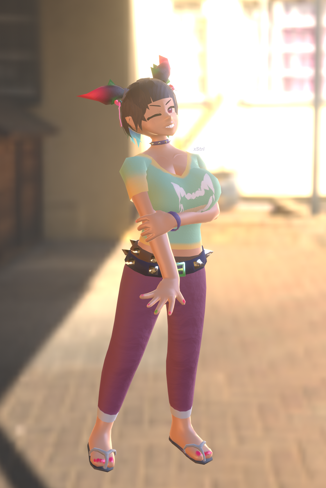
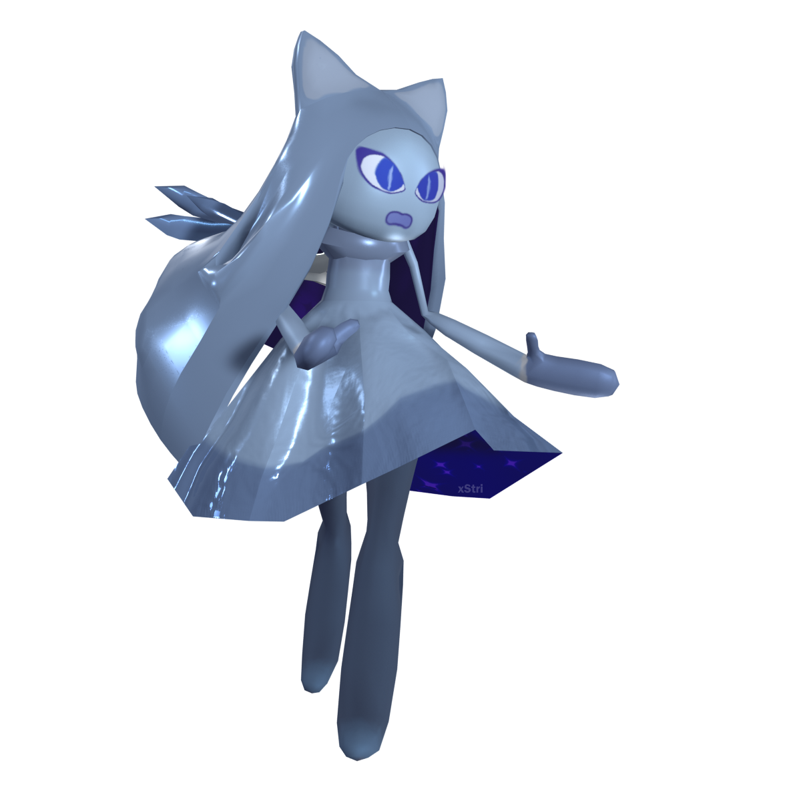

A render of one of my original characters, Pamella.
3D Art & Animations
Almost all of my models feature low to mid-poly triangle counts, as well as normal mapping. This makes them highly suitable for use in game development.
Original Character Models
Pamella's run cycle.
Render of another original character I made. This one's themed around fire, and likes to down entire bottles of hot sauce for fun.

"Acacia"

It's my persona!
"Test - Catboy Archery"
An anthropomorphized version of the real-life animal "Stygiomedusa Gigantea", more commonly known as the Giant Phantom Jellyfish.
Animated render. I also made the choice to add glowing spikes to the model to spice up the character design; driving the shape keys with bones for ease of animation.

My submission for an art contest where several artists had to submit their own "fakémon" (Original creature designs inspired by Pokémon). My name for this one is "Spectrelsius", a portmanteau of "Spectre" and "Celsius".
Run cycle for Spectrelsius.
Environments
An underground party venue.
A simple "dark forest" environment I did for a personal project.
A WIP environment depicting an autumn outdoor park.
Features material blending between the soil and concrete / tree bark.
Small Props / Objects
An animated, small turning fan prop. (520 triangles)
A potted monstera plant. (840 triangles)
A simple, stylized boombox. (174 triangles)